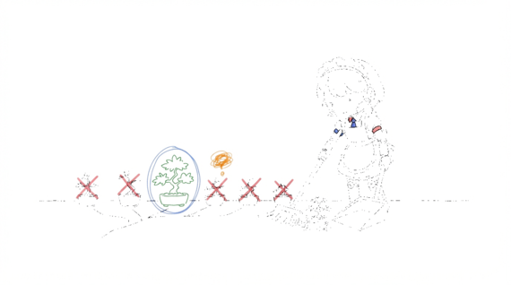

Cargo build cleanup for developers
Alice reads configured target directories, identifies generated entries, and asks before removing anything. Source and Git history stay.
she found the build cache

sweep the build files
Generated Cargo artifactsGenerated entries: debug/.fingerprint, deps, incremental, and Cargo metadata.
Active Cargo/rustc check: required again before cleaning.
Target root and unrecognized entries: preserved.
the worktrees are still here
the original report
Merged, active, and protected workBuild targets show their evidence
Open a target to inspect its path and generated entries. A fresh observation and active-process check happen again before the confirmed batch.
what she checked
qhipa-ai
~/.cache/cargo-target/qhipa-ai
What stays
- Source files
- Primary and linked worktrees
- Branches and Git history
- Anything Alice does not recognize
Rust regenerates the removed entries on the next build.
clean these build files?
599 GB from 1 Cargo target
Alice will remove verified generated entries. Source, worktrees, branches, and the target root stay.
~/.cache/cargo-target/qhipa-aiA fresh observation runs first. Active Cargo or rustc use protects the target. Unrecognized entries stay. This cannot be undone.
all tidy. she's having tea.
599 GB back1 Cargo target cleaned
Source, worktrees, and Git history were not touched. The target root and unrecognized entries remain.
Preview complete · no files changed
Build cleanup limits
Only generated Cargo entries are removed. Source, worktrees, and branches stay.